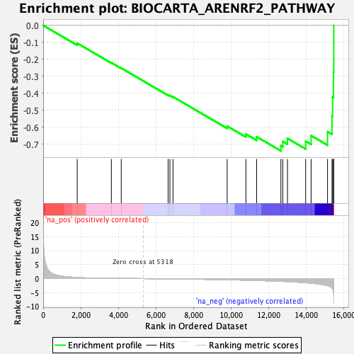
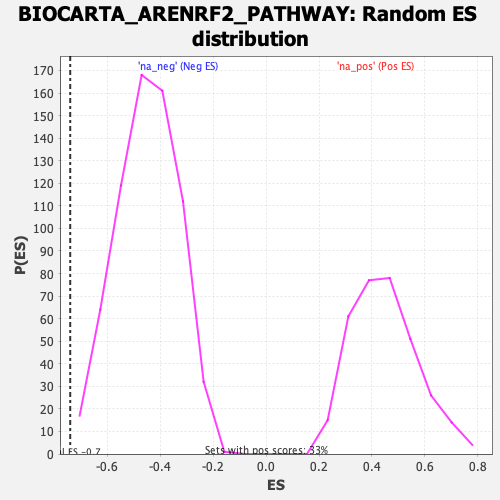

| | | Dataset | DE_genes |
| Phenotype | NoPhenotypeAvailable |
| Upregulated in class | na_neg |
| GeneSet | BIOCARTA_ARENRF2_PATHWAY |
| Enrichment Score (ES) | -0.7401874 |
| Normalized Enrichment Score (NES) | -1.6460992 |
| Nominal p-value | 0.0014836795 |
| FDR q-value | 0.07484683 |
| FWER p-Value | 0.225 |
Table: GSEA Results Summary

Fig 1: Enrichment plot: BIOCARTA_ARENRF2_PATHWAY
Profile of the Running ES Score & Positions of GeneSet Members on the Rank Ordered List
| PROBE | GENE SYMBOL | GENE_TITLE | RANK IN GENE LIST | RANK METRIC SCORE | RUNNING ES | CORE ENRICHMENT | | 1 | NFE2L2 | | | 1812 | 0.387 | -0.1050 | No |
| 2 | CREB1 | | | 3629 | 0.091 | -0.2197 | No |
| 3 | MAPK14 | | | 4156 | 0.061 | -0.2518 | No |
| 4 | PRKCB | | | 6650 | -0.085 | -0.4104 | No |
| 5 | CRYZ | | | 6747 | -0.091 | -0.4138 | No |
| 6 | GSTA1 | | | 6911 | -0.103 | -0.4211 | No |
| 7 | POR | | | 9795 | -0.417 | -0.5944 | No |
| 8 | KEAP1 | | | 10791 | -0.566 | -0.6409 | No |
| 9 | PRKCA | | | 11361 | -0.669 | -0.6566 | No |
| 10 | HMOX2 | | | 12654 | -0.968 | -0.7096 | Yes |
| 11 | MAPK1 | | | 12754 | -0.998 | -0.6844 | Yes |
| 12 | AKR7A2 | | | 13004 | -1.077 | -0.6665 | Yes |
| 13 | MAFK | | | 13973 | -1.456 | -0.6831 | Yes |
| 14 | MAPK8 | | | 14262 | -1.636 | -0.6500 | Yes |
| 15 | HMOX1 | | | 15137 | -2.517 | -0.6269 | Yes |
| 16 | MAFF | | | 15377 | -3.396 | -0.5350 | Yes |
| 17 | MAFG | | | 15407 | -3.631 | -0.4221 | Yes |
| 18 | JUN | | | 15456 | -4.705 | -0.2764 | Yes |
| 19 | FOS | | | 15471 | -8.771 | 0.0000 | Yes |
Table: GSEA details [plain text format]

Fig 2: BIOCARTA_ARENRF2_PATHWAY: Random ES distribution
Gene set null distribution of ES for BIOCARTA_ARENRF2_PATHWAY